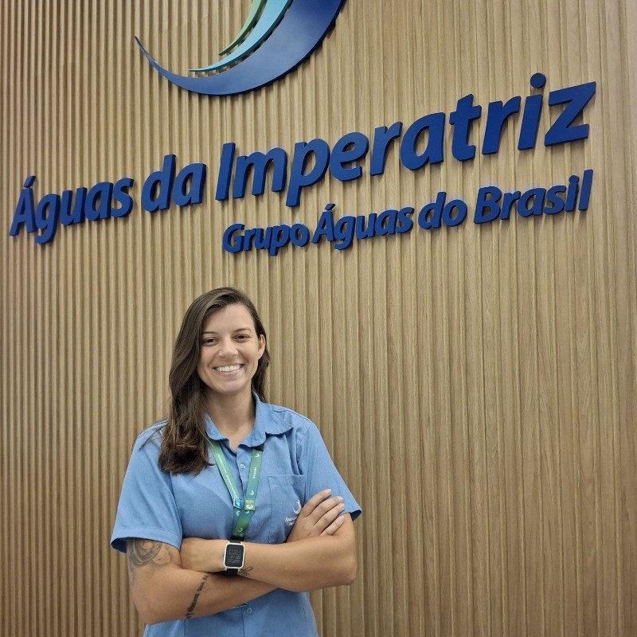
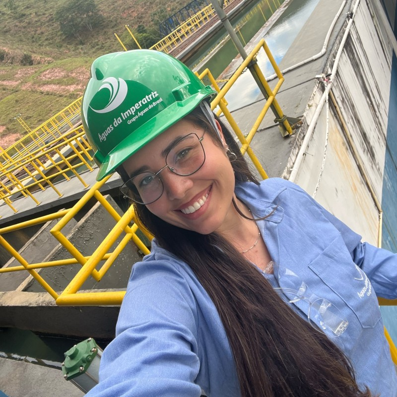

- 08:00 às 09:00 - Abertura Oficial
- 09:00 às 10:30 - Palestra ponte rio-niterói e concreto submerso
Com Eng. Tecnólogo - 10:30 às 11:00 - Coffee Break
- 11:00 às 12:30 - Palestra
Com especialistas convidados - 12:30 às 14:00 - Intervalo
- 14:00 às 16:00 - Palestra
Com especialistas convidados - 16:15 às 17:45 - Mesa Redonda: "Da Universidade ao Mercado: Caminhos e Desafios na Engenharia e Arquitetura"

Luana Sant'Anna
Engenheira Civil - Segurança do Trabalho
Tamara Pains
Arquiteta e Urbanista - Segurança do Trabalho
Thiago Lima
Engenheiro Ambiental e Sanitarista e Engenheiro Civil
- 08:00 as 09:00 - Abertura
- 09:00 as 10:30 - Palestra Com especialistas convidados
- 10:30 as 11:00 - Coffee Break
- 11:00 as 12:30 - Palestra Com especialistas convidados
- 12:30 as 14:00 - Intervalo
- 14:00 as 16:00 - Palestra Com especialistas convidados
- 16:15 as 17:45 - Palestra Com especialistas convidados